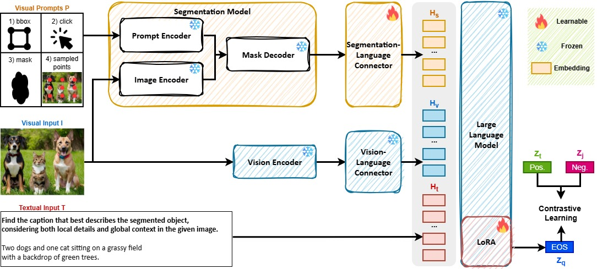
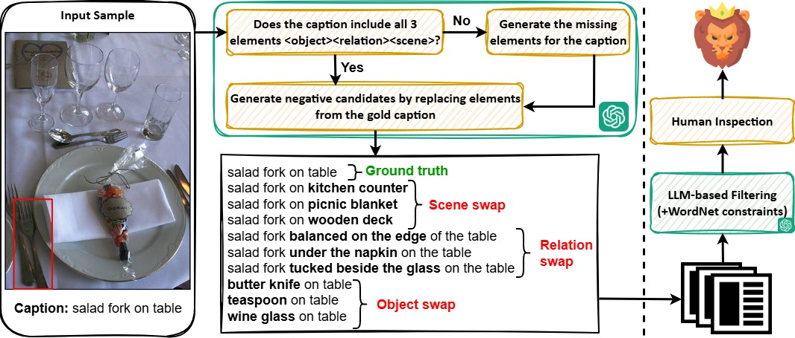
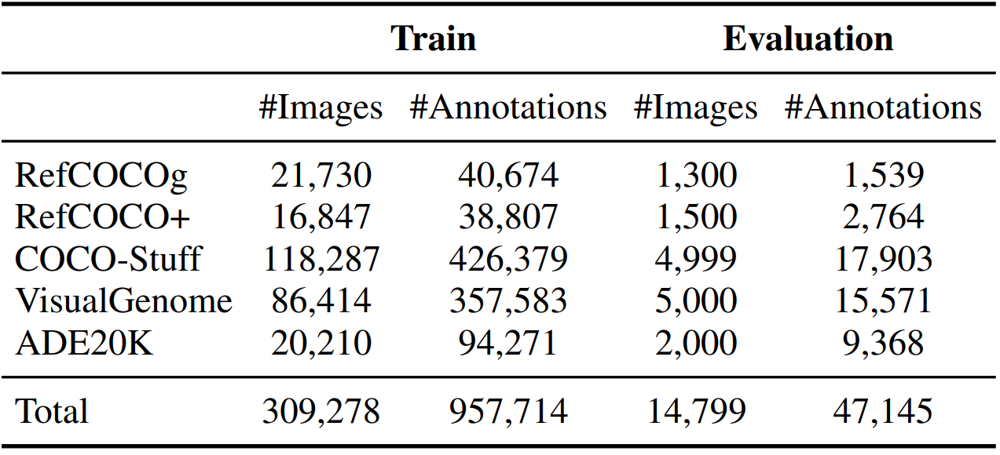
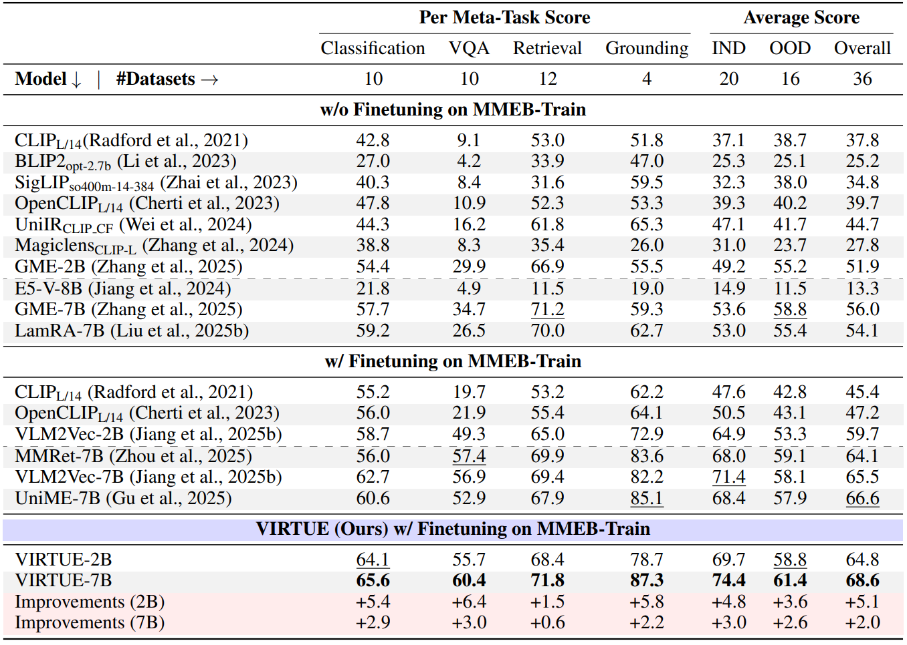
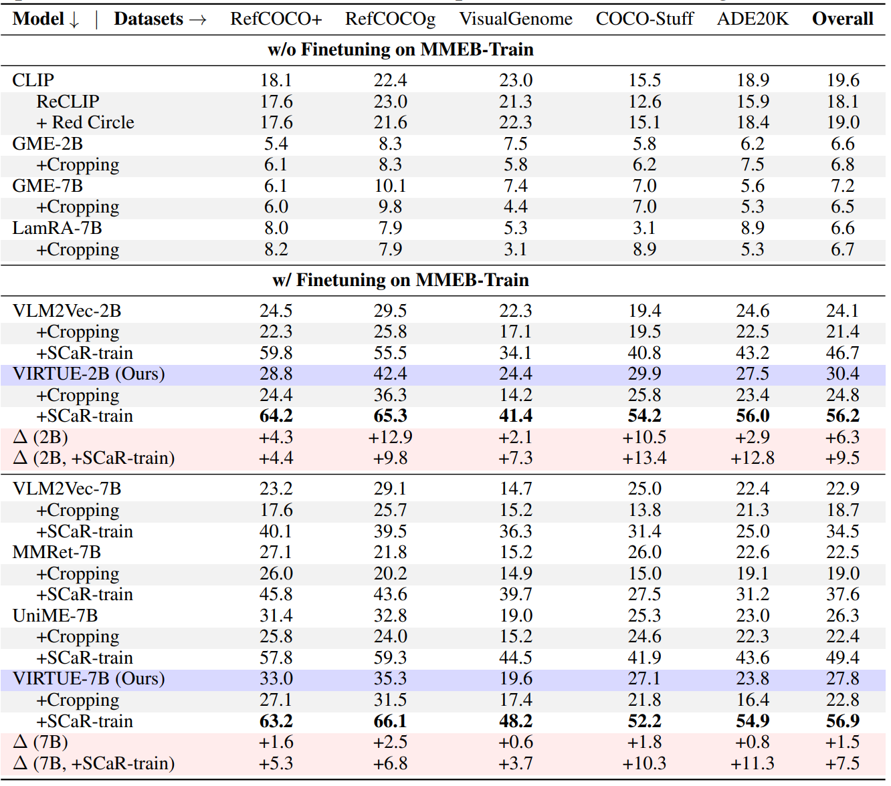

VIRTUE: Visual-Interactive Text-Image Universal Embedder

Abstract
Multimodal representation learning models have demonstrated successful operation across complex tasks, and the integration of vision-language models (VLMs) has further enabled embedding models with instruction-following capabilities. However, existing embedding models lack visual-interactive capabilities to specify regions of interest from users (e.g., point, bounding box, mask), which have been explored in generative models to broaden their human-interactive applicability. Equipping embedding models with visual interactions not only would unlock new applications with localized grounding of user intent, which remains unexplored, but also enable the models to learn entity-level information within images to complement their global representations for conventional embedding tasks. In this paper, we propose a novel Visual-InteRactive Text-Image Universal Embedder (VIRTUE) that extends the capabilities of the segmentation model and the vision-language model to the realm of representation learning. In VIRTUE, the segmentation model can process visual prompts that pinpoint specific regions within an image, thereby enabling the embedder to handle complex and ambiguous scenarios more precisely. To evaluate the visual-interaction ability of VIRTUE, we introduce a large-scale Segmentation-and-Scene Caption Retrieval (SCaR) benchmark comprising 1M samples that aims to retrieve the text caption by jointly considering the entity with a specific object and image scene. VIRTUE consistently achieves a state-of-the-art performance with significant improvements across 36 universal MMEB (3.1%-8.5%) and five visual-interactive SCaR (15.2%-20.3%) tasks.
VIRTUE Framework
Overview of VIRTUE. The framework trained with contrastive loss consists of a segmentation model, a segmentation-language connector (orange), and a VLM (blue). It supports arbitrary combinations of visual and textual inputs with an optional visual prompt. If no prompt is provided, the model samples $N$ points uniformly from the image to extract entity-level information.

SCaR Benchmarks
The data collection pipeline to build SCaR. We adopt GPT-4V to generate missing elements for the ground-truth caption as well as negative candidates.
Collected samples (left) are filtered via LLM-then-human inspection (right) to ensure quality. Each SCaR sample contains an image with a bounding box, one ground-truth caption, and nine distractors.


MMEB Evaluation
Results on MMEB. The scores are averaged per meta-task. The \hlpink{improvements} are calculated between VIRTUE and the best-performing 2B and 7B baselines.

SCaR Evaluation
Results on our proposed SCaR benchmark. All models incorporate bounding boxes in the textual prompt. +Cropping: Use only the cropped region of the image based on the given bounding box as input. +SCaR-train: Further finetune 1k steps with the SCaR training set.

BibTeX
@article{wangICLR2026virtue,
author = {Wei-Yao Wang and
Kazuya Tateishi and
Qiyu Wu and
Shusuke Takahashi and
Yuki Mitsufuji},
title = {VIRTUE: Visual-Interactive Text-Image Universal Embedder},
journal = {arXiv preprint arXiv:2510.00523},
year = {2025}
}